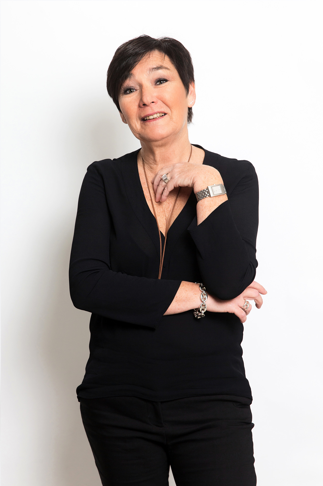
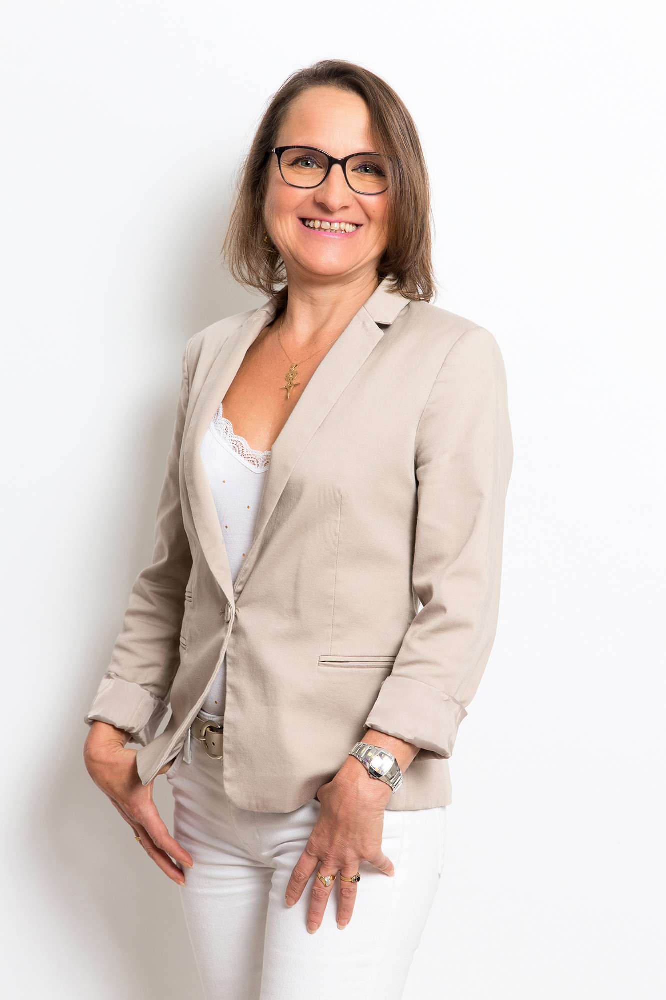
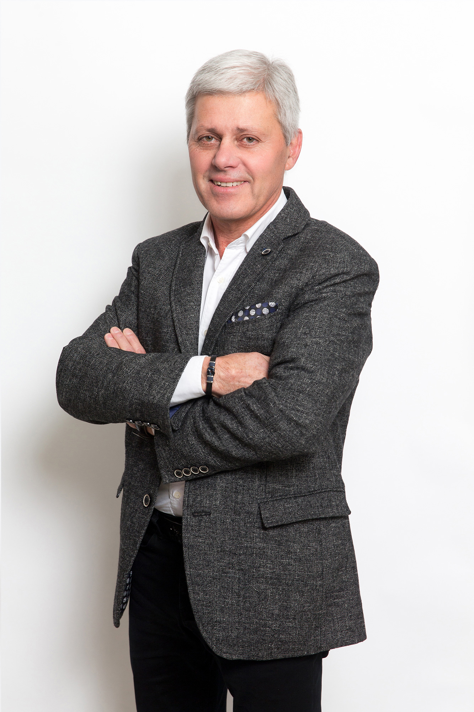

Мастера-парфюмеры
Наши парфюмеры, настоящие увлеченные профессионалы, вкладывают все свои знания в создание парфюмерных композиций.
Богатые разнообразным опытом, они сочиняют и создают, а также полагаются на команду по оценке и маркетингу, чтобы перевести ваши запросы в уникальную обонятельную подпись. Они уделяют самое большое внимание выбору сырья, которое они используют, чтобы предлагать самые качественные заметки. Обладая мастерством рецептур для всех видов применения, они соблазнят вас своими обонятельными творениями.
-
 Натали ЖЕСЛАННатали ЖЕСЛАН
Родившаяся в Грассе - на юге Франции - и ее мать из Нормандии, на севере, с большим географическим и культурным разрывом, ничто не предопределило Натали Жеслан стать парфюмером. Прошла простую летнюю работу помощником техника парфюмерии в NAARDEN, где Натали открыла для себя чудеса аромата. Голландская компания оставила ее после летней работы и в конце 80-х перевела ее в Париж, чтобы помогать "Мастерам парфюмерии". От квеста до ARGEVILLE, а затем от FLORESSENCE в 2006 году, любопытство и страсть Натали привели ее на довольно необычный карьерный путь.
-
 Даниэль МАНИКАНДаниэль МАНИКАН
Даниэль Маникан является наследницей семейной традиции: ее дедушка был парфюмером, и за ним последовало немало химиков. С самого начала, ориентируясь на химию, Даниэль прошла путь по всем позициям в области разработки ароматов в лаборатории FLORESSENCE с 1989 года. От контроля качества до законодательных департаментов она очень рано участвовала в разработке ароматов для средств по уходу за кожей. Ее опыт в области высококачественного сырья берет свое начало с тех лет, когда она занимала должность менеджера по законодательству, где повседневная прерогатива наших клиентов-косметологов - «без присмотра и ухода».
-
 Патрис МАРТЕНПатрис МАРТЕН
Патрис Мартен, родом из семьи парфюмеров из мировой парфюмерной столицы Грасс, и после двух лет бизнес-исследований, поступил в Школу парфюмерии в Руре в Грассе в 1976 году. Это истинное призвание побудило его изучить все аспекты этой профессии. Парфюмер для компании ROURE в Грассе и Париже в течение 80–90-х годов, он взял перерыв, чтобы преподавать в ASFO (Союз парфюмерии). Наконец он возобновил свою роль парфюмера в компании Aromafleur. С 2012 года Патрис создает парфюмерные творения во FLORESSENCE.
Оценка и маркетинг
Наши оценщики присутствуют с самого начала парфюмерных проектов. Они сопровождают парфюмеров на протяжении всего творческого процесса, опираясь на высокоразвитую обонятельную память и чутко реагируя на пожелания и пожелания клиента. Являясь истинным краеугольным камнем в процессе разработки, команда оценки тесно сотрудничает с парфюмерами и менеджерами по продажам.
Непрерывный интерес и изучение тенденций мирового рынка собираются и анализируются отделом маркетинга в сотрудничестве с нашими местными партнерами, чтобы предоставить клиентам наиболее подходящие и актуальные обонятельные решения.